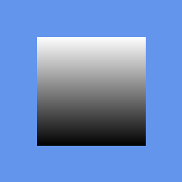

Effects System
Implementation status: All six XNA 4.0 stock effects — BasicEffect, AlphaTestEffect, DualTextureEffect, EnvironmentMapEffect, SkinnedEffect and SpriteEffect — are implemented natively in C++. They are not translated from XNA's shipped shader bytecode; each is a real reimplementation, with per-backend shader programs behind it. CNA additionally ships three non-XNA effects: PbrEffect, SkinnedPbrEffect and ShaderEffect.
Compiled .fx bytecode is not supported at all — Effect(GraphicsDevice&, byte[]) throws NotImplementedException unconditionally. This is the single biggest real porting gap in CNA. See below.
Overview
CNA implements the full XNA 4.0 effects pipeline inside the Microsoft::Xna::Framework::Graphics namespace. An effect is a shader program combined with its parameter set and render state. You apply an effect by setting its parameters, then calling effect.CurrentTechnique.Passes[0].Apply() before drawing primitives.
All stock effects implement one or more effect interfaces (IEffectMatrices, IEffectFog, IEffectLights) so that higher-level drawing code can treat effects polymorphically. Parameters can also be accessed directly through EffectParameter objects exposed on the effect.
Custom shaders are reachable through exactly one path: the non-XNA ShaderEffect class, whose constructor takes the GLSL source text directly. You can hand it a string literal, read the file yourself, or let ContentManager do the reading through a .cnj Effect descriptor. There is no second route — compiled .fx files cannot be loaded.
Stock effects at a glance
Six XNA 4.0 stock effects, each implemented natively in C++ rather than translated from XNA's shipped shader bytecode.
| Effect | Key capability | Implements | Status |
|---|---|---|---|
BasicEffect |
Ambient/diffuse/specular lighting, up to 3 directional lights, texture mapping, fog | IEffectMatrices, IEffectFog, IEffectLights | Implemented |
AlphaTestEffect |
Alpha threshold discard (greater/less/equal/etc.), single texture | IEffectMatrices, IEffectFog | Implemented |
DualTextureEffect |
Blends two textures with fog | IEffectMatrices, IEffectFog | Implemented |
EnvironmentMapEffect |
Cube-map environment reflection and Fresnel, fog | IEffectMatrices, IEffectFog, IEffectLights | Implemented |
SkinnedEffect |
Skeletal animation via a GPU bone palette, 1–4 skinning weights, fog | IEffectMatrices, IEffectFog, IEffectLights | Implemented |
SpriteEffect |
Internal 2D effect used by SpriteBatch; not typically used directly | IEffectMatrices | Implemented |
BasicEffect
BasicEffect is the general-purpose 3D effect. It supports per-vertex and per-pixel lighting with up to three independent directional lights, a single diffuse texture, per-vertex color, and distance fog. Lighting is controlled via the IEffectLights interface — call EnableDefaultLighting() to activate a standard three-point light rig in a single call.
// C++23 example
auto effect = std::make_shared<BasicEffect>(graphicsDevice);
effect->SetWorld(Matrix::Identity);
effect->SetView(camera.View());
effect->SetProjection(camera.Projection());
effect->EnableDefaultLighting();
effect->SetTextureEnabled(true);
effect->SetTexture(myTexture);
for (auto& pass : effect->CurrentTechnique->Passes) {
pass->Apply();
graphicsDevice->DrawIndexedPrimitives(
PrimitiveType::TriangleList, 0, 0, indexCount / 3);
}AlphaTestEffect
AlphaTestEffect renders a single textured surface and discards fragments whose alpha does not satisfy a configurable comparison against a reference value. Supported comparisons are Always, Never, Equal, NotEqual, Less, LessEqual, Greater, and GreaterEqual. This effect is useful for vegetation, fences, and other cut-out geometry where alpha blending would cause sorting problems.
auto effect = std::make_shared<AlphaTestEffect>(graphicsDevice);
effect->SetWorld(transform);
effect->SetView(camera.View());
effect->SetProjection(camera.Projection());
effect->SetTexture(treeBarkTexture);
effect->SetAlphaFunction(CompareFunction::Greater);
effect->SetReferenceAlpha(128); // discard alpha <= 0.5
effect->CurrentTechnique->Passes[0]->Apply();DualTextureEffect
DualTextureEffect samples two textures in the same draw call and blends them together. A common use case is lightmap baking: the first texture holds the base colour and the second holds a pre-baked lightmap. Both textures share the same set of texture coordinates unless the shader variant with independent UV channels is selected.
auto effect = std::make_shared<DualTextureEffect>(graphicsDevice);
effect->SetWorld(Matrix::Identity);
effect->SetView(camera.View());
effect->SetProjection(camera.Projection());
effect->SetTexture(diffuseTexture);
effect->SetTexture2(lightmapTexture);
effect->CurrentTechnique->Passes[0]->Apply();EnvironmentMapEffect
EnvironmentMapEffect adds a cube-map environment reflection on top of a diffuse texture. The amount of reflection versus base colour is controlled by the environment map amount and an optional Fresnel factor, which makes reflections stronger at glancing angles. A single directional light contributes specular highlights in addition to the environment map. Fog is also supported.
auto effect = std::make_shared<EnvironmentMapEffect>(graphicsDevice);
effect->SetWorld(sphereTransform);
effect->SetView(camera.View());
effect->SetProjection(camera.Projection());
effect->SetTexture(diffuseTexture);
effect->SetEnvironmentMap(skyboxCube);
effect->SetEnvironmentMapAmount(0.8f);
effect->SetFresnelFactor(1.0f);
effect->CurrentTechnique->Passes[0]->Apply();SkinnedEffect
SkinnedEffect is the standard effect for skeletal (skinned) mesh animation. Bone matrices are uploaded to the GPU as a bone palette. Each vertex can reference 1, 2, or 4 bones through the WeightsPerVertex property. The effect also supports the full lighting model (three directional lights) and fog.
auto effect = std::make_shared<SkinnedEffect>(graphicsDevice);
effect->SetWorld(Matrix::Identity);
effect->SetView(camera.View());
effect->SetProjection(camera.Projection());
effect->EnableDefaultLighting();
effect->SetWeightsPerVertex(4);
effect->SetBoneTransforms(boneMatrices); // std::span<Matrix>
effect->CurrentTechnique->Passes[0]->Apply();SpriteEffect
SpriteEffect is an internal 2D effect consumed by SpriteBatch. It sets up an orthographic projection over the back-buffer dimensions and routes through a simple textured-quad shader. Application code does not normally instantiate SpriteEffect directly — SpriteBatch manages it internally, but it is exposed in the public API for completeness and for XNA compatibility.
Beyond XNA: PbrEffect, SkinnedPbrEffect, ShaderEffect
Three effect classes in CNA have no XNA 4.0 counterpart. They are tagged NOXNA in the headers, which means a compile-time purity check can be switched on to make using them an error — useful if your goal is a strictly XNA-compatible codebase.
| Effect | What it adds |
|---|---|
PbrEffect |
Physically based rendering — a lighting model XNA 4.0 predates entirely. |
SkinnedPbrEffect |
The same PBR model applied to skinned (skeletally animated) geometry. |
ShaderEffect |
Hand-written GLSL/SPIR-V shaders. The only custom-shader path in CNA. |
No .fx bytecode — the biggest porting gap
CNA cannot load compiled .fx effect bytecode. The Effect(GraphicsDevice&, byte[]) constructor throws NotImplementedException unconditionally — there is no MojoShader equivalent and no HLSL bytecode translator. Games that ship custom HLSL effects cannot run on CNA. Of everything documented on this site, this is the single largest obstacle to porting an existing XNA title.
The consequence follows through the whole content path. The XNB reader registers an EffectReader, but it is an always-throwing placeholder, so a compiled effect will not load from .xnb either — see XNB Content Pipeline → Known gaps.
If your game uses custom shaders, the only route forward is to rewrite each one as GLSL or SPIR-V and load it through ShaderEffect. The stock effects are unaffected: they are native C++ reimplementations and need no bytecode at all.
Backend coverage
Effect support is a property of the selected rendering backend, chosen at build time via -DCNA_GRAPHICS_BACKEND. Coverage differs sharply across the 14 backends; the summary below reflects what has actually been audited. See Rendering Backends for the full table.
| Backend | Effect coverage | Notes |
|---|---|---|
| EasyGL | All 9 effect families | The most mature backend and the reference for effect behaviour. 13 GLSL programs; both per-vertex and per-pixel lighting. |
| SDL_GPU | 9 effect families | 23 SPIR-V blobs. Vulkan-only device today. |
| Vulkan | 8 effect paths | 35 SPIR-V entry points. |
| D3D9 | 72 verified SM2/SM3 blobs | Windows-only. Uniquely targets pixel-exact XNA 4.0 authenticity. |
| bgfx | 108 shader blobs, GL/GLES/Vulkan/WebGPU only | No D3D or Metal variants, so 3D silently draws nothing on bgfx's default Windows/macOS renderer. |
| SDL_Renderer, Dx3, Ascii, Canvas | 2D only | No programmable 3D effect pipeline by design; 3D calls throw on SDL_Renderer. |
| WebGPU | Experimental | Backbuffer-only forward renderer; 2D plus early 3D. |
Effect interfaces
IEffectMatrices
Implemented by every stock 3D effect. Provides the three standard transformation matrices used to project geometry from object space to clip space.
| Property | Type | Description |
|---|---|---|
World | Matrix | Object-to-world transform (model matrix) |
View | Matrix | World-to-camera transform |
Projection | Matrix | Camera-to-clip transform (perspective or orthographic) |
IEffectFog
Implemented by all stock effects that render geometry in world space. Distance fog is blended linearly between FogStart and FogEnd. Set FogEnabled = false to disable the computation entirely.
| Property | Type | Description |
|---|---|---|
FogEnabled | bool | Enables or disables distance fog |
FogStart | float | Camera distance at which fog begins |
FogEnd | float | Camera distance at which fog is fully opaque |
FogColor | Vector3 | RGB colour of the fog |

A quad receding from the camera with fog enabled: the linear blend between FogStart and FogEnd is interpolated across the surface. This is genuine Microsoft XNA 4.0 runtime output from CNA's oracle corpus (tools/xna-oracle/), which CNA's D3D9 backend is diffed against at --tolerance 0. See Verification.
IEffectLights
Implemented by BasicEffect, EnvironmentMapEffect, and SkinnedEffect. Exposes an ambient light and three independent directional lights. Call EnableDefaultLighting() to configure a standard three-point lighting setup in one call.
| Member | Type | Description |
|---|---|---|
AmbientLightColor | Vector3 | RGB colour of the scene ambient light |
DirectionalLight0 | DirectionalLight | First directional light |
DirectionalLight1 | DirectionalLight | Second directional light |
DirectionalLight2 | DirectionalLight | Third directional light |
EnableDefaultLighting() | void | Configures a standard three-point lighting rig |
Each DirectionalLight exposes:
Direction—Vector3pointing toward the light source (normalized)DiffuseColor—Vector3RGB diffuse contributionSpecularColor—Vector3RGB specular contributionEnabled—boolenables or disables this light
EffectParameter
All effect parameters are accessible through the Effect::Parameters collection as EffectParameter objects. Parameters can be read and written using typed GetValue<T>() and SetValue() overloads. This mirrors the XNA 4.0 API exactly.
Supported types for Get/Set:
float— scalar floating-point valueVector2,Vector3,Vector4— float vectorsMatrix— 4×4 column-major matrixMatrix[]— array of matrices (used bySkinnedEffectbone palette)Texture2D— 2D texture sampler bindingbool— boolean flag
// Look up a parameter by name and set it directly
auto param = effect->Parameters["DiffuseColor"];
param->SetValue(Vector4(1.0f, 0.5f, 0.0f, 1.0f));
// Read back a matrix
Matrix world = effect->Parameters["World"]->GetValue<Matrix>();Prefer the typed properties on stock effects (e.g. effect->SetWorld(...)) over raw EffectParameter access where possible. Typed setters validate input and update dependent cached state such as the combined WorldViewProjection matrix.
Custom ShaderEffect
When the stock effects do not meet your needs, ShaderEffect lets you supply your own shader source. Its constructor takes three arguments — the device and the two GLSL sources as source text, not paths. Note that ShaderEffect is a CNA extension, not part of XNA 4.0 — it is tagged NOXNA.
NOXNA ShaderEffect(GraphicsDevice& device,
const std::string& vertSrc,
const std::string& fragSrc);Backend requirement: Custom shaders are supplied as GLSL source on the OpenGL-family backends and as SPIR-V on the Vulkan-family backends. Backends without a programmable 3D pipeline (SDL_Renderer, Dx3, Ascii, Canvas) cannot run a custom ShaderEffect at all.
Alternatively, a .cnj Effect descriptor lets ContentManager read the sources for you. It has exactly two shader fields, vertex and fragment, each naming a GLSL source file relative to the descriptor; missing either raises a ContentLoadException.
{
"cnjVersion": 1,
"type": "Effect",
"vertex": "my_effect.vert",
"fragment": "my_effect.frag"
}Load it as Effect — that, not ShaderEffect, is the type the reader is registered for — then downcast. Uniforms are set by name through the SetUniformXxx family; there is no Parameters collection on ShaderEffect.
auto fxBase = content.Load<Effect>("effects/my_effect");
auto* myEffect = dynamic_cast<ShaderEffect*>(fxBase.get());
// Apply first — SetUniformXxx writes to the currently bound program.
myEffect->CurrentTechnique->Passes[0]->Apply();
myEffect->SetUniformMat4("WorldViewProj", wvp.M());
myEffect->SetUniformVec4("Tint", 1.0f, 0.8f, 0.6f, 1.0f);
graphicsDevice->DrawPrimitives(PrimitiveType::TriangleList, 0, triangleCount);For the Vulkan backend, the source the descriptor names is pre-compiled SPIR-V (.spv) rather than GLSL. The push constant block is limited to 128 bytes, and uniform buffer layout follows std140 rules, matching standard Vulkan conventions.
See ShaderEffect and Tutorial 52: Writing Custom Shaders for the full treatment.